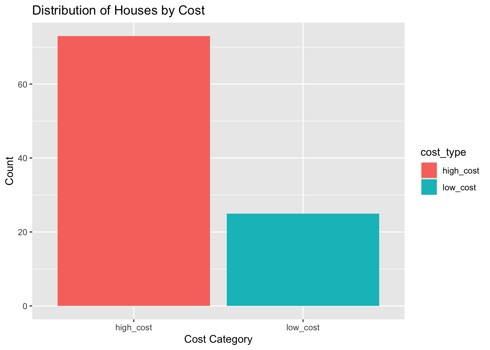

Code
c <- duke_forest |>
mutate(cost_type = ifelse(price > 450000, "high_cost", "low_cost"))This lab will introduce you to basic data wrangling techniques using the dplyr package from the Tidyverse umbrella of packages. You will learn how to use functions such as select(), mutate(), filter(), and drop_na(). We will use the familiar duke_forest data set from the openintro package for our examples.
Go to posit cloud (https://posit.cloud) and open the MATH 144 project. Once your MATH 144 project is open, clean up the console and the environment area. You may also want to close all open files.
Next, create your new quarto file as follows:
File > New File > Quarto document. Use the file name Lab_4. Do not delete the .qmd extension.
Add the author and title keys to the YAML section. Write your name (in quotes) in the author field and set the title to “Basic Data Wrangling".
Change the output option to pdf then click on render. A PDF document with your name and document title should pop up.
We will need the following packages for this lab. Open a code chunk and load them. Run the packages before you proceed.
#| include: false
library(tidyverse)
library(openintro)
library(dplyr)The dplyr package is part of the tidyverse, but we load it separately to emphasize its importance for data wrangling tasks. We load the openintro package in order to access the duke_forest data set.
Load the duke_forest data set from the openintro package. You can do this by adding the following code chunk:
data(duke_forest)This will make the duke_forest data set available for use in your analysis. We have used this data set in previous labs, so you should be familiar with its structure and contents. In case you need a reminder, you can view the first few rows of the data set by adding and running the following code chunk:
head(duke_forest)Alternatively, you can run ?duke_forest in the console to pull the full documentation.
Data wrangling (aka data cleaning) is the process of readying your data using various tools and functions before you run your analyses. Most data from the real world is often messy and will require a bit of cleaning and organizing before performing the analyses. It is often said that data analysts and scientists spend a majority of their time cleaning data.
You can think of data wrangling as preparing ingredients before cooking. Raw data is like unwashed vegetables—you can’t use it properly until you clean and prepare it.
Although there are plenty of functions used to wrangle data, we will only consider the basic ones — select(), mutate(), filter(), and drop_na():
select()The select() function is used to isolate specific columns from a larger data set. For example, to select only the price and cooling columns from the duke_forest data set, we use:
a <- duke_forest |>
select(price, cooling)This will create a new data set called a that contains only the price and cooling columns. After running the code, a new object named a should appear in the environment area. You can click on it to view the new data set.
mutate()The mutate() function is used to create new columns based on existing ones. For example, to create a new column/variable called price_per_sqft that calculates the price per square foot of each house in the duke_forest data set, you can use the following code:
b <- duke_forest |>
mutate(price_per_sqft = price/area)This will create a new data set stored as b that contains all the original columns from the duke_forest data set, as well as the new column named price_per_sqft.
mutate() and ifelse() togetherAnother common scenario that arises is when you want to split a given numerical variable into some categories. For example, suppose you want to designate the house prices as high cost or low cost based on price. Let us say you consider houses over $ 450,000 to be high cost and those less than $ 450,000 to be low cost. You can do this using the mutate function and the ifelse() function as shown below:
c <- duke_forest |>
mutate(cost_type = ifelse(price > 450000, "high_cost", "low_cost"))This will create a new data set and store it as c and it contains all the original columns from the duke_forest data set, as well as the new column named cost_type.
With this new data, you can create a simple bar plot to visualize the distribution of houses by cost as shown below. Notice that the labs() function if for adding labels:
ggplot(data=c, aes(x = cost_type, fill=cost_type)) +
geom_bar() +
labs(title = "Distribution of Houses by Cost",
x = "Cost Category",
y = "Count")
filter()The filter() function is used to isolate specific rows/observations based on certain conditions. For example, suppose you want a new data set that includes only houses that cost more than $500,000, you can use the following code:
d <- duke_forest |>
filter(price > 500000)This will create a new data set called d that contains only the rows where the price column is greater than $500,000. All others will be dropped.
If you want to filter only houses with exactly three bedrooms, you can use the following code:
e <- duke_forest |>
filter(bed == 3)If you want only houses with central air conditioning, you can filter by cooling as shown below:
f <- duke_forest |>
filter(cooling == "central")Notice that central is in quotes because it is a string (text). Notice also the use double equal sign == for equality comparison.
Question: How many houses have central air conditioning?
Question: How many 3-bedroom houses have central air conditioning?
drop_na()The drop_na() function is used to remove rows with missing values (NA) from a data set. For example, to remove rows with missing values in the price column from the duke_forest data set, you can use the following code:
g <- duke_forest |>
drop_na(price)Running the above code returns a new data set named g. Notice that g has the same number of observations as the original duke_forest data set because there are no missing values in the price column. All houses in the data set have a price.
This lab uses the same data set (duke_forest) used in the explorations above. To start, create a new header called Lab 5 Exercises. Be sure to label each question in your responses. For example, you can use the header “Question 1” for the first question, “Question 2” for the second, etc. When you are done, render the document to generate a PDF. Download the document and submit it on Canvas under Lab 5. The lab will be graded out of 20 (ten points for exploration work above, and 10 for the exercises). Note that the explorations must have descriptive text or headers describing what each code chunk is achieving. Avoid copying and pasting without reading.
(2 pts) Use the select() function to create a new data set that contains the variables price and bed only. Store this new data set as a.
(2 pts) Using data set a and the mutate() function, create a new column that converts the price into thousands (simply divide price by 1000). Store the new data set as y and name the new column price_thousands.
(2 pts) Use the filter() function to create a new data set that contains only houses built before the year 2000. How many houses in the data set were built before 2000?
(2 pts) What is the average price of all 4-bedroom houses? What about the 3-bedroom houses? HINT: You may use the filter() and summarize() functions for this question.
(2 pts) What does the variable hoa in the duke_forest data set represent? Use the drop_na() function to drop all cases with NA (missing values) in the hoa column. How many cases are left after dropping all cases with NA in the hoa column?